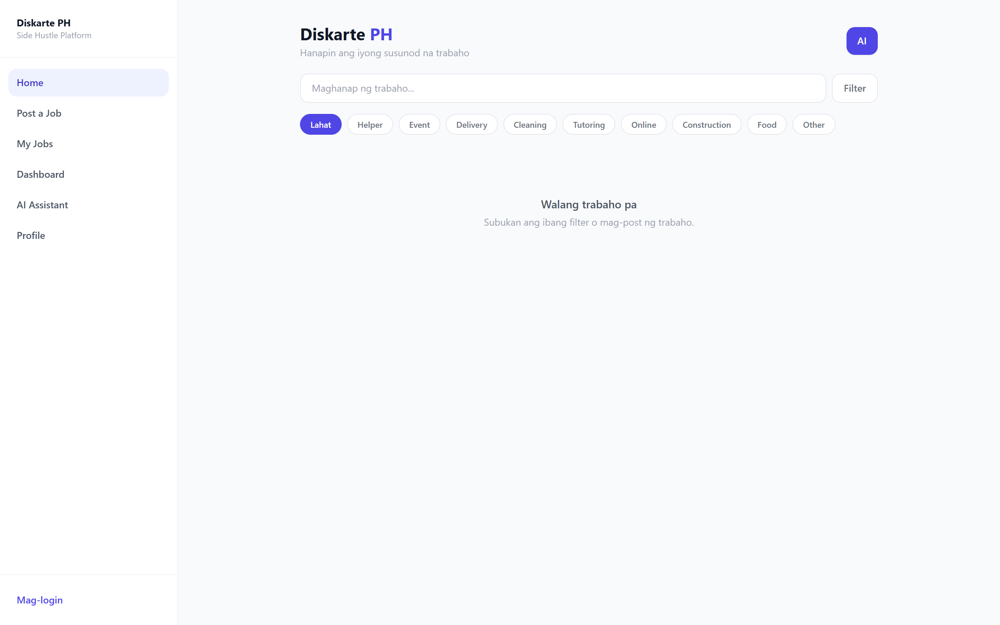
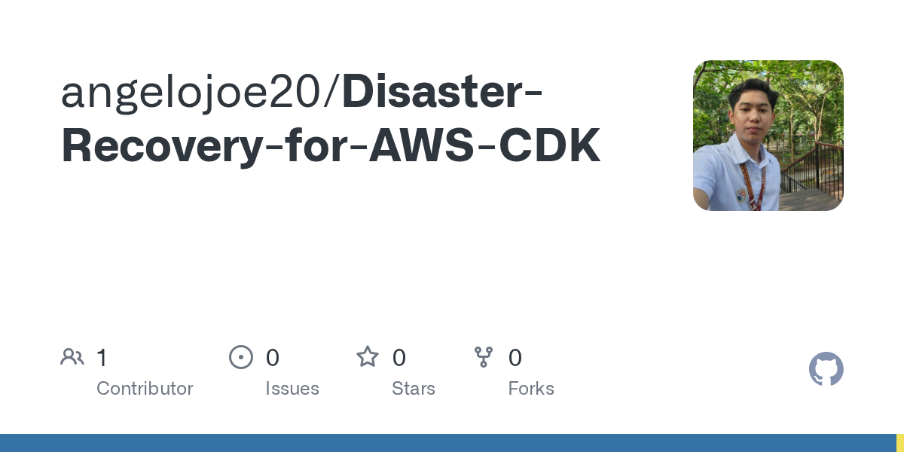

Cloud Infrastructure
Provision and support AWS environments with attention to networking, IAM, storage, and operational readiness.
AWS
VPC
IAM
DevOps & Cloud Engineer / Philippines
Cloud infrastructure. Thoughtfully built.
I design and support AWS environments, automate infrastructure, and document the details that help teams deliver with confidence.

$ whoami
Cloud Engineer Level III
stack AWS / Terraform / Docker
focus build. automate. document.
Engineering Focus
Four areas that connect my day-to-day engineering work.
Provision and support AWS environments with attention to networking, IAM, storage, and operational readiness.
Turn repeatable infrastructure patterns into maintainable code, reducing manual setup and deployment drift.
Support analytics environments using AWS services for storage, ETL, access control, and query workflows.
Make implementation repeatable through architecture diagrams, operating procedures, security reviews, and clear handover notes.
Hello! I'm Angelo Joe Delos Santos, a Computer Engineering graduate building a career around cloud architecture, DevOps, and practical systems that teams can trust. I enjoy turning messy infrastructure requirements into clear designs, repeatable automation, and stable delivery paths. Outside work, I recharge through hiking and exploring new places.

Tools I use to design, ship, and support cloud-ready systems.
 AWS
AWS Google Cloud
Google Cloud GitHub
GitHubRoles across solution architecture, cloud engineering, infrastructure, and support.

Cloud Engineer Level III · Cloud & Data
Selected ongoing client implementations

Solutions Architect (Jan 2026 – May 2026) · Presales Engineer (May 2025 – Dec 2025)
Selected completed client implementations and POCs

Database Administrator Intern · Quality Testing Intern (Feb 2025 – Mar 2025)
Supported logistics, database, and quality testing workflows by improving spreadsheet-based tracking, assisting inventory checks, and validating printer cartridge quality.

Cloud Engineering Intern (Nov 2024 – Feb 2025)
Supported cloud and ERP infrastructure research around Google Cloud, Odoo, Docker-based deployments, and PostgreSQL components while producing documentation and presentation materials for the cloud infrastructure team.

Customer Service Representative (Jun 2022 – Jan 2023)
Supported a US retail credit card servicing account, handling end-to-end customer inquiries across billing, payments, disputes, account servicing, and digital self-service support.

Chat Support Representative (Mar 2022 – May 2022)
Managed chat sessions, ensured quick responses, and escalated issues when necessary.

May 2024 - Present
Managing budgeting and financial support for community-driven initiatives.
September 2024 - June 2025
Facilitated collaborations between AWS and student communities to drive cloud learning.
February 2024 - June 2025
Organized cloud-related events, established sponsorships & partnerships, and promoted cloud education initiatives.
October 2021 - June 2025
Assisted in organizing developer events and cloud-related activities, fostering engagement within the tech community. Managed external relations, collaborating with industry partners.
Learning backed by independently verifiable credentials.
Amazon Web Services
Professional
Passed Nov 2025 · Expires Nov 2028
Advanced architecture patterns for complex migrations, governance, and enterprise reliability.
Specialty
Passed Sep 2025 · Expires Sep 2028
Validated AWS and hybrid network architecture, security, and troubleshooting at scale.
Associate
Passed July 2025 · Expires July 2028
Covered scalable, highly available AWS design patterns with cost and security tradeoffs.
Foundational
Passed Jan 2025 · Expires Jan 2028
Built baseline fluency across IAM, EC2, S3, VPC, pricing, and AWS best practices.
AI
Passed Oct 2025 · Expires Oct 2028
Learned core AI concepts, AWS AI services, and responsible applied AI workflows.
Oracle & IBM
AI Foundations
Expires Oct 27, 2027
Covers foundational AI and machine learning concepts with practical application in Oracle Cloud Infrastructure.
Foundational
Issued Sep 5, 2025 · Expires Sep 5, 2026
Validated foundational knowledge of IBM watsonx Orchestrate, customer conversations, business pain points, skills, and integrations.
Selected builds across cloud infrastructure, apps, automation, and AI-assisted workflows.

Mobile-first web platform for Filipino users to discover local short-term job opportunities and for small businesses to post temporary work.
Local short-term work discovery can be fragmented and hard to browse quickly.
A mobile-first job discovery and posting flow backed by API and relational data.
Clearer matching experience for workers and small businesses.

Infrastructure-as-code solution implementing disaster recovery strategies on AWS using CDK.
DR architecture is hard to repeat when patterns stay in diagrams only.
A CDK-based infrastructure pattern for repeatable AWS recovery planning.
Stronger resilience story with deployment consistency and reviewable code.

IoT-powered vending machine dispensing OTC medications with real-time inventory tracking, multiple payments, and RFID-based rewards.
Medicine access and inventory visibility can be limited in small physical setups.
An IoT vending flow connecting mobile UX, stock tracking, and ESP32 hardware.
A practical prototype for controlled dispensing and operational tracking.

Streamlined book tracking and database management to improve library operations and reporting.
Manual library workflows make borrowing, returns, and reports harder to maintain.
A lightweight desktop system for book records, borrower tracking, and reporting.
Improved day-to-day visibility for school library operations.
Away from the terminal, usually on a trail. A few chapters from life outdoors.
Peaks Summited
—
Latest Hike
—
Goal
20+
Open to opportunities, collaborations, and cloud conversations.
Whether you're looking for a cloud engineer, want to collaborate on a project, or just want to connect — feel free to reach out. I'll get back to you as soon as I can.